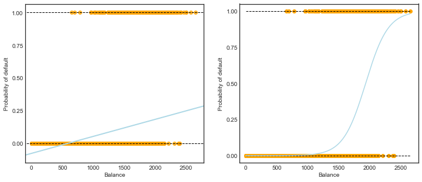

# %load ../standard_import.txtimport pandas as pdimport numpy as npimport matplotlib as mplimport matplotlib.pyplot as pltimport seaborn as snsimport sklearn.linear_model as skl_lmfrom sklearn.discriminant_analysis import LinearDiscriminantAnalysisfrom sklearn.discriminant_analysis import QuadraticDiscriminantAnalysisfrom sklearn.metrics import confusion_matrix, classification_report, precision_score, roc_curve, aucfrom sklearn import preprocessingfrom sklearn import neighborsimport statsmodels.api as smimport statsmodels.formula.api as smfpd.set_option('display.notebook_repr_html', False)%matplotlib inlineplt.style.use('seaborn-white')
/Users/yuany/anaconda3/lib/python3.6/site-packages/statsmodels/compat/pandas.py:56: FutureWarning: The pandas.core.datetools module is deprecated and will be removed in a future version. Please use the pandas.tseries module instead.
from pandas.core import datetools
Load dataset
# In R, I exported the dataset from package 'ISLR' to an Excel filedf = pd.read_excel('Data/Default.xlsx')# Note: factorize() returns two objects: a label array and an array with the unique values.# We are only interested in the first object. df['default2'] = df.default.factorize()[0]df['student2'] = df.student.factorize()[0]df.head(3)
default student balance income default2 student2
1 No No 729.526495 44361.625074 0 0
2 No Yes 817.180407 12106.134700 0 1
3 No No 1073.549164 31767.138947 0 0
X_train = df.balance.values.reshape(-1,1) y = df.default2# Create array of test data. Calculate the classification probability# and predicted classification.X_test = np.arange(df.balance.min(), df.balance.max()).reshape(-1,1)clf = skl_lm.LogisticRegression(solver='newton-cg')clf.fit(X_train,y)prob = clf.predict_proba(X_test)fig, (ax1, ax2) = plt.subplots(1,2, figsize=(12,5))# Left plot: Linear Regressionsns.regplot(df.balance, df.default2, order=1, ci=None, scatter_kws={'color':'orange'}, line_kws={'color':'lightblue', 'lw':2}, ax=ax1)# Right plot: Logistic Regressionax2.scatter(X_train, y, color='orange')ax2.plot(X_test, prob[:,1], color='lightblue')for ax in fig.axes: ax.hlines(1, xmin=ax.xaxis.get_data_interval()[0], xmax=ax.xaxis.get_data_interval()[1], linestyles='dashed', lw=1) ax.hlines(0, xmin=ax.xaxis.get_data_interval()[0], xmax=ax.xaxis.get_data_interval()[1], linestyles='dashed', lw=1) ax.set_ylabel('Probability of default') ax.set_xlabel('Balance') ax.set_yticks([0, 0.25, 0.5, 0.75, 1.]) ax.set_xlim(xmin=-100)

Table 4.1
y = df.default2
scikit-learn
# Using newton-cg solver, the coefficients are equal/closest to the ones in the book. # I do not know the details on the differences between the solvers.clf = skl_lm.LogisticRegression(solver='newton-cg')X_train = df.balance.values.reshape(-1,1)clf.fit(X_train,y)print(clf)print('classes: ',clf.classes_)print('coefficients: ',clf.coef_)print('intercept :', clf.intercept_)
From the figures above, the group of students has a higher mean credit balance than the others. A higher balance will lead to a higher default rate. Therefore, being student and balance are highly correlated predictors. When such correlated predictors exist, one has to be careful on the interpretation of coefficients which might not be true in reality.
Here we have seen the phenomenon of confounding. In statistics, a confounder (also confounding variable, confounding factor, or lurking variable) is a variable that influences both the response and independent variable, causing a spurious association. Being a student is a confounder that influence both the independent variable balance and response default. Confounding is a causal concept, and as such, cannot be described in terms of correlations or associations.
The left figure shows the ROC curves for LDA and 3-dimensional logistic regression (default ~ balance + income + student[Yes]). The right figure shows the LDA and 2-variable logistic regression (default ~ balance + student[Yes]). Clearly dropping a bad predictor (income) leads to significant improvements of logistic regression in terms of ROC curves. It is interesting that LDA, as an inverse regression method, seems not much influenced by the bad predictor.